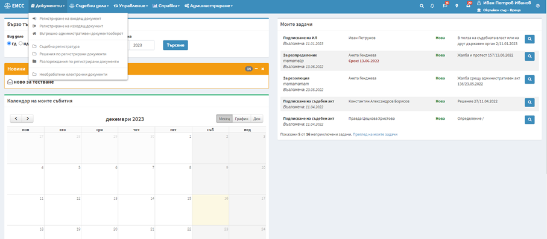
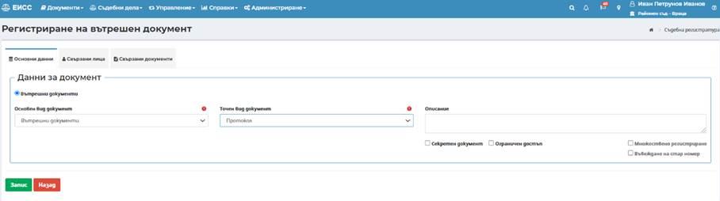
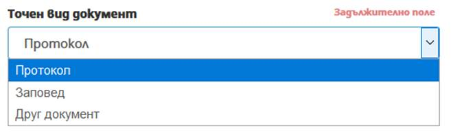
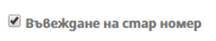
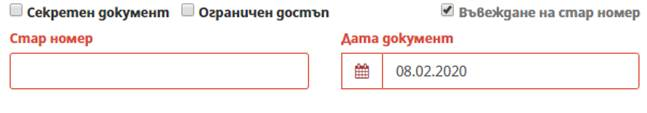
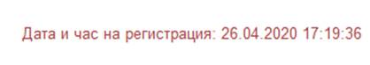
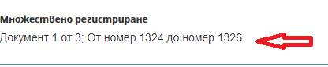
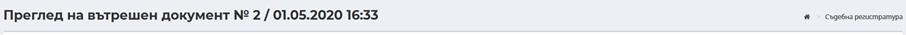
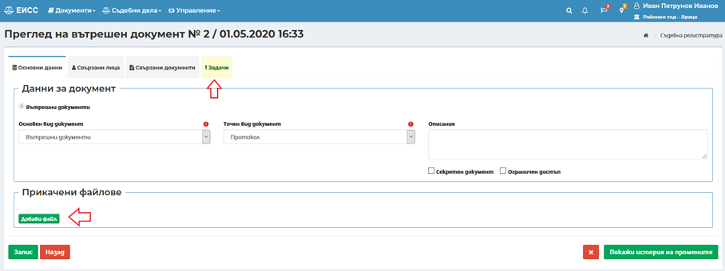
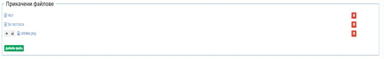

При регистриране на документ от вътрешно-административен документооборот се попълва информация в няколко отделни таба, като всеки от тях съдържа отделни секции:
· Таб Основни Данни
ü Секция Данни за документ

- Основен вид документ – представлява номенклатура от стойности, групиращи точните видове документи от вътрешния документооборот. От падащото меню се избира основният вид документ, който се регистрира.
- Точен вид документ – в зависимост от избраната стойност в поле основен вид документ се филтрират стойности в падащото меню за точния вид документ. Потребителят избира точен вид документ, който се регистрира.

- Описание – поясняващо поле, в което могат да бъдат вписани допълнителни данни, по преценка на потребител. Полето няма задължителен характер.
- Секретен документ – индикатор, оказващ че регистрираният документ има секретен характер или поставен гриф. Отбелязването става с поставяне на отметка в полето. По този начин ще бъде дадена възможност по този документ да бъде образувано дело и то да бъде разпределено.
- Ограничен достъп – индикатор, оказващ че регистрираният документ изисква ограничен достъп. Отбелязването става с поставяне на отметка в полето. Това ще ограничи достъпа до този документ и последващото образувано дело.
- Въвеждане на стар номер – при необходимост от пререгистриране в ЕИСС на стар документ, получил номер от друга деловодна система, потребителят слага отметка в полето

, с което системата дава възможност да се въведат данни за стар номер и дата на документ, без да се генерира нов номер от ЕИСС. Датата на документа трябва да е преди въвеждането на ЕИСС в експлоатация.

След регистрация на такъв документ, той запазва номерът и датата въведени в полетата, ръчно от потребителя, но системата допълнително съхранява данни за датата и часът на пререгистрация в ЕИСС, които се визуализират в горния ляв ъгъл на секцията Данни за документ:

- Множествено регистриране – дава възможност за едновременно регистриране на документи, в случаите, когато те са еднакви като вид документ и вносителя е едно и също лице. При избор на бутон Множествено регистриране се появява поле Брой документи, в което трябва да се въведе техния брой. След попълване на поле Свързани лица и избор на бутон Запис се визуализират номерата на регистрираните документи:

Таб Свързани лица
Таб Свързани документи
След попълване на данните се избира бутон се генерира номер на изходящия документ.

След запис на регистрирания документ се отваря допълнителна секция Прикачени файлове в таб Основни данни и нов таб Задачи в документа.

Допълнителни функционалности след запис
ü Секция Прикачени файлове – има възможност да се прикачат файлове на сканирани документи, които не са изготвени в системата. Прикачването става посредством избор на бутон Добави файл в секция Прикачени файлове на таб Основни данни на документа.

При грешно прикачен файл, системата позволява същият да бъде изтрит, посредством бутон от потребител с роля Супервайзор.
· Таб Задачи
След въвеждане на всички необходими данни по документа се преминава към насочване на задача за последваща обработка.